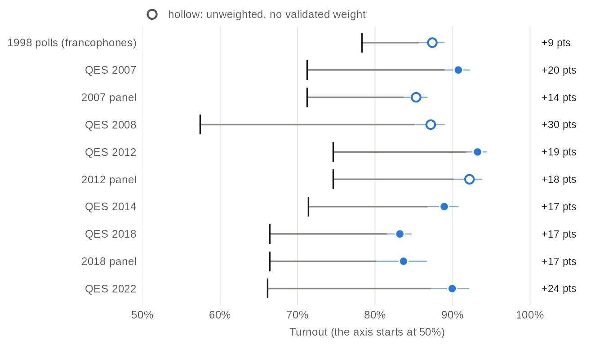
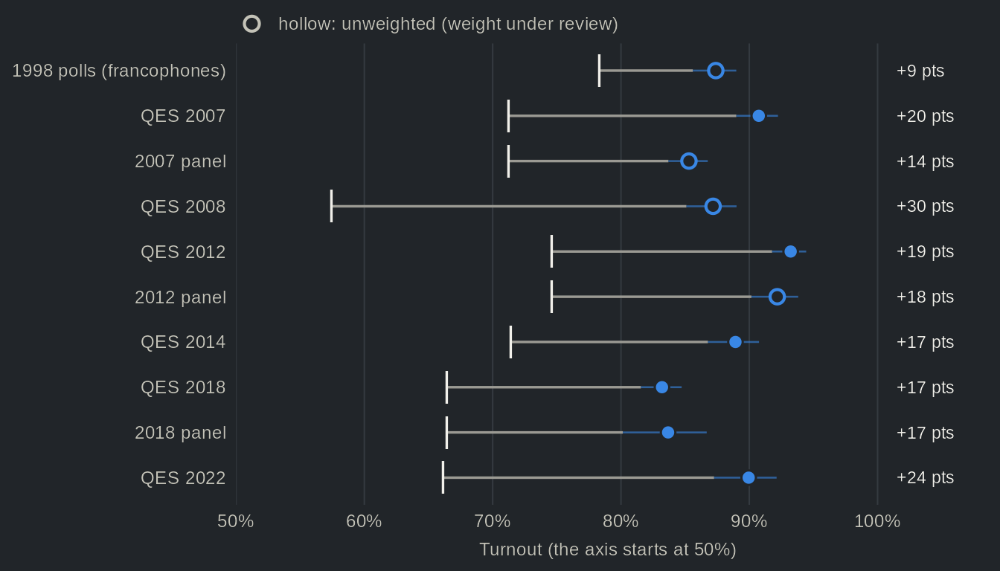
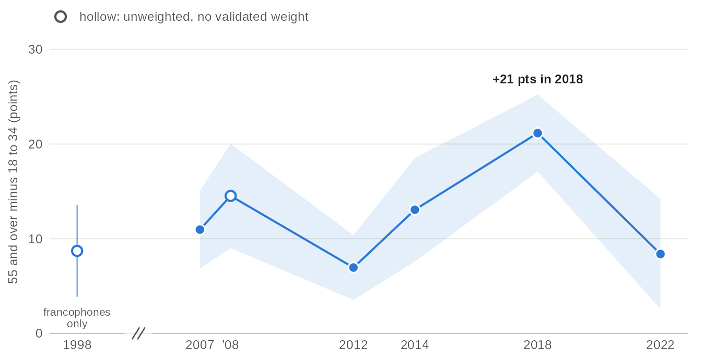
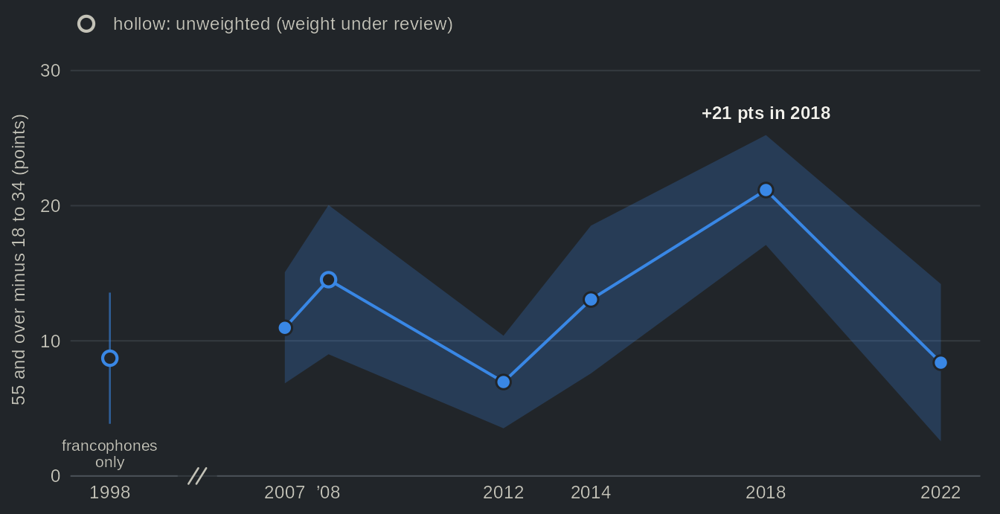
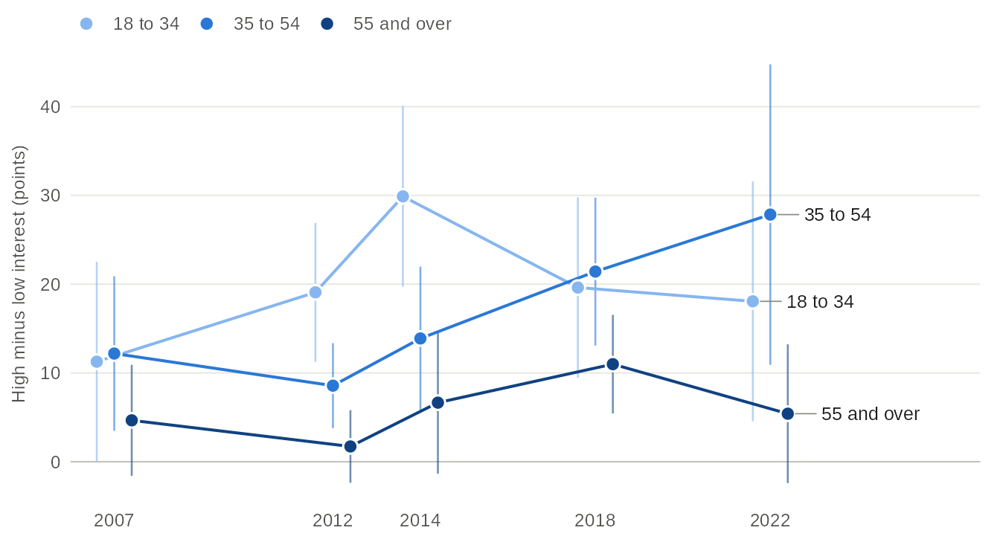
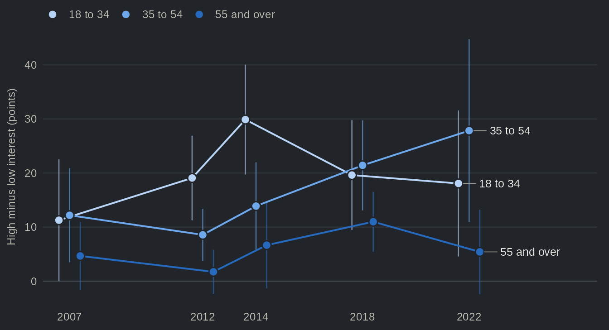
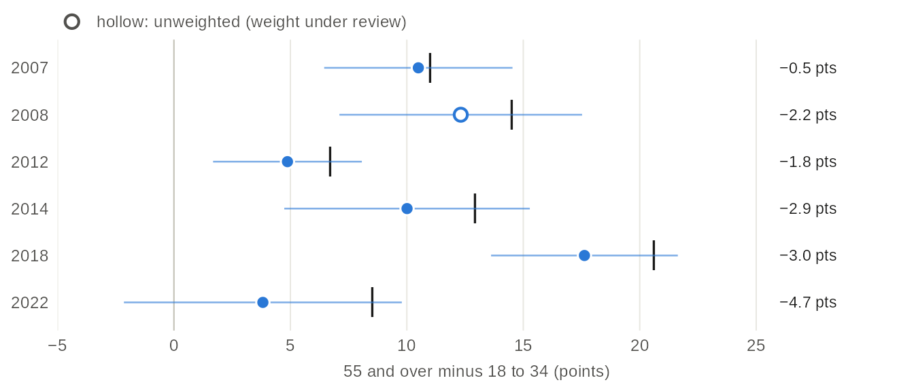
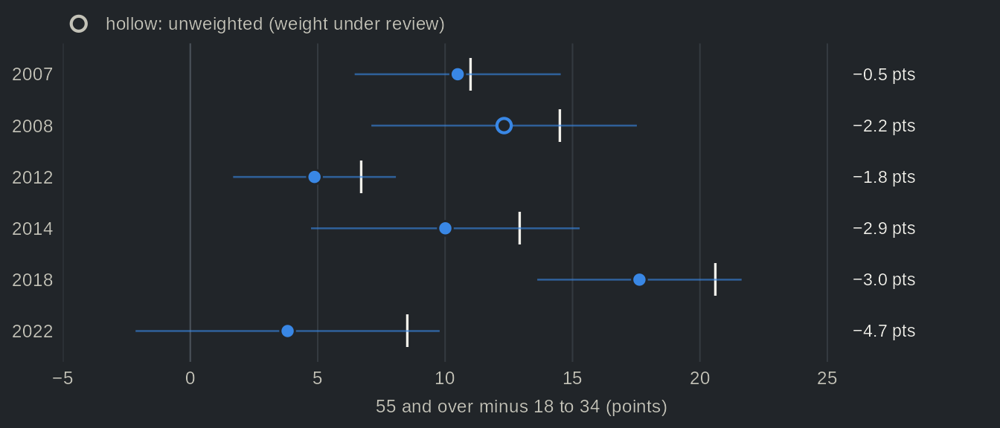

Who votes? Age, interest in politics and turnout in Quebec
Source:vignettes/articles/turnout.Rmd
turnout.RmdTurnout in Quebec provincial elections has declined. According to Élections Québec, it fell from 78% in 1998 to 66% in 2022, with a low of 57% in 2008. The conventional wisdom attributes this decline to the young, and not without reason: that young people vote less than their elders is one of the most robust findings in the study of elections, and in Canada it comes with a well-established explanation. Blais and colleagues (2004) show that the decline of turnout in federal elections comes mostly from the generations born after the baby boom, which vote less than their elders did at the same age, in good part because they pay less attention to politics and are less likely to see voting as a duty. However, most of what we know about the age gap comes from federal elections. Here, we use the Quebec Election Studies to ask two questions. How large is the age gap in reported turnout at each provincial election since 1998? And how much of it does interest in politics account for?
Overall, we find mixed support for the conventional wisdom. Respondents aged 18 to 34 report voting less than those aged 55 and over at every election, by 11 percentage points in 2007 and by 21 in 2018, and they are less interested in politics. Yet when we compare younger and older respondents who report the same interest, most of the gap remains: in 2018, it goes from 21 to 18 points. Interest is part of the story, but a small part at most elections.
Surveys overstate turnout
Before turning to age, we look at the reports themselves. Surveys overstate turnout, and the Quebec Election Studies are no exception. In 2022, 90% of respondents said they had voted, against an official turnout of 66%. Two mechanisms account for this (Selb and Munzert 2013). First, people who vote are also more likely to answer a political survey. Second, some who did not vote say they did. Weighting does not correct either: the weights bring each sample in line with census figures on age, sex and language (and, depending on the study, region or education), not with turnout.


Source: Quebec Election Studies, turnout reported after the election, every study that asked it; official turnout of Élections Québec. Official turnout is ballots cast over registered electors, while the surveys interview adults, so the two do not cover exactly the same people. Dots: reported turnout, weighted, with 95% confidence intervals; hollow dots: unweighted. The 1998 polls interviewed francophones only. The 16- and 17-year-olds of the 2018 study, who could not vote, are left out.
Table view
| Election | Study | Reported turnout, % [95% CI] | n | Official turnout, % | Gap | Weighting |
|---|---|---|---|---|---|---|
| 1998 | 1998 polls | 87.4 [85.6, 89.0] | 1483 | 78.3 | +9 pts | unweighted (weight under review) |
| 2007 | QES 2007 | 90.7 [89.0, 92.2] | 2162 | 71.2 | +20 pts | weighted |
| 2007 | 2007 panel | 85.3 [83.7, 86.8] | 2054 | 71.2 | +14 pts | unweighted (weight under review) |
| 2008 | QES 2008 | 87.2 [85.1, 89.0] | 1131 | 57.4 | +30 pts | unweighted (weight under review) |
| 2012 | QES 2012 | 93.2 [91.8, 94.4] | 1486 | 74.6 | +19 pts | weighted |
| 2012 | 2012 panel | 92.2 [90.2, 93.8] | 844 | 74.6 | +18 pts | unweighted (weight under review) |
| 2014 | QES 2014 | 88.9 [86.8, 90.8] | 1499 | 71.4 | +17 pts | weighted |
| 2018 | QES 2018 | 83.2 [81.5, 84.7] | 2635 | 66.4 | +17 pts | weighted |
| 2018 | 2018 panel | 83.7 [80.1, 86.7] | 842 | 66.4 | +17 pts | weighted |
| 2022 | QES 2022 | 90.0 [87.3, 92.1] | 1215 | 66.1 | +24 pts | weighted |
Every study sits above the official figure, by 9 to 30 points, and the gap is largest in 2008, the election with the lowest turnout. More generally, reported turnout moves much less than official turnout. Across the Quebec Election Studies it ranges from 83% to 93%, while official turnout ranges from 57% to 78%. In other words, these surveys are of little use for measuring the level of turnout, and more useful for comparing groups, which is how we use them below. Of course, a comparison between groups is only as good as the reports behind it. If young non-voters say they voted more often than older non-voters do, the gap between the reports of younger and older respondents understates the real gap; if they say so less often, it overstates it. The surveys cannot tell the two apart. Selection calls for the same caution: the young who agree to answer a political survey are likely more engaged than their peers, which, if anything, would narrow the gap between reports.
The age gap, election by election


Source: one Quebec Election Study per election, and the 1998 polls (francophones only). Band: 95% confidence interval of the difference. Weighted; hollow dots (1998 and 2008): unweighted. The horizontal axis is in years, with a break between 1998 and 2007. The table view also gives the turnout of each age group, and the panels led by Claire Durand at the 2007, 2012 and 2018 elections.
Table view
| Election | Study | 18 to 34, % | 35 to 54, % | 55 and over, % | Gap, 55+ minus 18-34 [95% CI] | Weighting |
|---|---|---|---|---|---|---|
| 1998 | 1998 polls | 81.6 | 88.8 | 90.3 | +8.7 pts [3.9, 13.6] | unweighted (weight under review) |
| 2007 | QES 2007 | 84.8 | 91.4 | 95.7 | +11.0 pts [6.9, 15.1] | weighted |
| 2007 | 2007 panel | 73.5 | 86.4 | 91.0 | +17.5 pts [12.9, 22.2] | unweighted (weight under review) |
| 2008 | QES 2008 | 78.9 | 86.5 | 93.5 | +14.5 pts [9.0, 20.0] | unweighted (weight under review) |
| 2012 | QES 2012 | 89.5 | 92.7 | 96.4 | +7.0 pts [3.5, 10.4] | weighted |
| 2012 | 2012 panel | 89.0 | 91.7 | 93.7 | +4.7 pts [-1.3, 10.7] | unweighted (weight under review) |
| 2014 | QES 2014 | 80.9 | 89.8 | 93.9 | +13.1 pts [7.6, 18.5] | weighted |
| 2018 | QES 2018 | 70.3 | 81.8 | 91.4 | +21.2 pts [17.1, 25.2] | weighted |
| 2018 | 2018 panel | 73.8 | 81.9 | 91.4 | +17.5 pts [8.3, 26.8] | weighted |
| 2022 | QES 2022 | 86.5 | 85.8 | 94.9 | +8.4 pts [2.6, 14.2] | weighted |
The age gap is present at every election. Respondents aged 55 and over report voting more than those aged 18 to 34 by 11 points in 2007, 21 in 2018 and 8 in 2022. Its size, however, is far from stable. The gap is smallest in 2012 (7 points), when official turnout was 75%, and largest in 2018, when it fell to 66%. In 2018, the drop in turnout shows among the young and barely among their elders. Compared with 2014, reported turnout fell by 11 points among 18- to 34-year-olds (to 70%) and by 2 among those aged 55 and over (to 91%). One might conclude that when turnout falls, it falls among the young. The 2022 election does not fit this reading. Official turnout was 66%, as in 2018, but the gap was less than half as large, and those aged 18 to 34 reported voting about as often as those aged 35 to 54 (both at 86%, although the figure for the young rests on only 269 respondents).
Interest in politics matters most before 55


Source: Quebec Election Studies of 2007, 2012, 2014, 2018 and 2022, weighted (the 2008 study asked about interest in the election instead). Low interest: not at all or hardly interested in politics; high: very interested (on the 0-10 questions of 2007 and 2022, 0 to 4 and 8 to 10). The four-point and the 0-10 questions do not cut the public the same way, so the age groups are best compared within an election rather than across elections. Lines: 95% confidence intervals of the difference; a gap resting on fewer than 30 respondents is not drawn. The turnout of each group is in the table view.
Table view
| Election | Study | Age | Interest | Reported turnout, % [95% CI] | n | Weighting |
|---|---|---|---|---|---|---|
| 2007 | QES 2007 | 18 to 34 | Low interest | 75.7 [65.4, 83.7] | 117 | weighted |
| 2007 | QES 2007 | 18 to 34 | Some interest | 87.0 [80.8, 91.5] | 246 | weighted |
| 2007 | QES 2007 | 18 to 34 | High interest | 87.0 [78.9, 92.2] | 197 | weighted |
| 2007 | QES 2007 | 35 to 54 | Low interest | 82.2 [72.8, 88.8] | 127 | weighted |
| 2007 | QES 2007 | 35 to 54 | Some interest | 92.9 [88.2, 95.8] | 369 | weighted |
| 2007 | QES 2007 | 35 to 54 | High interest | 94.4 [89.8, 97.0] | 238 | weighted |
| 2007 | QES 2007 | 55 and over | Low interest | 91.3 [83.4, 95.6] | 110 | weighted |
| 2007 | QES 2007 | 55 and over | Some interest | 97.1 [94.1, 98.6] | 310 | weighted |
| 2007 | QES 2007 | 55 and over | High interest | 95.9 [92.9, 97.7] | 403 | weighted |
| 2012 | QES 2012 | 18 to 34 | Low interest | 77.1 [69.6, 83.2] | 174 | weighted |
| 2012 | QES 2012 | 18 to 34 | Some interest | 95.2 [91.6, 97.3] | 236 | weighted |
| 2012 | QES 2012 | 18 to 34 | High interest | 96.2 [90.0, 98.6] | 119 | weighted |
| 2012 | QES 2012 | 35 to 54 | Low interest | 89.3 [84.4, 92.8] | 211 | weighted |
| 2012 | QES 2012 | 35 to 54 | Some interest | 94.9 [91.2, 97.1] | 292 | weighted |
| 2012 | QES 2012 | 35 to 54 | High interest | 97.9 [93.6, 99.3] | 126 | weighted |
| 2012 | QES 2012 | 55 and over | Low interest | 97.4 [89.8, 99.4] | 64 | weighted |
| 2012 | QES 2012 | 55 and over | Some interest | 94.6 [90.0, 97.2] | 162 | weighted |
| 2012 | QES 2012 | 55 and over | High interest | 99.1 [93.8, 99.9] | 88 | weighted |
| 2014 | QES 2014 | 18 to 34 | Low interest | 66.4 [56.4, 75.1] | 138 | weighted |
| 2014 | QES 2014 | 18 to 34 | Some interest | 86.0 [78.4, 91.3] | 167 | weighted |
| 2014 | QES 2014 | 18 to 34 | High interest | 96.3 [90.1, 98.6] | 84 | weighted |
| 2014 | QES 2014 | 35 to 54 | Low interest | 81.4 [73.8, 87.1] | 171 | weighted |
| 2014 | QES 2014 | 35 to 54 | Some interest | 96.2 [92.4, 98.1] | 279 | weighted |
| 2014 | QES 2014 | 35 to 54 | High interest | 95.2 [87.9, 98.2] | 126 | weighted |
| 2014 | QES 2014 | 55 and over | Low interest | 89.6 [80.0, 94.9] | 86 | weighted |
| 2014 | QES 2014 | 55 and over | Some interest | 94.3 [87.9, 97.4] | 269 | weighted |
| 2014 | QES 2014 | 55 and over | High interest | 96.3 [90.6, 98.6] | 169 | weighted |
| 2018 | QES 2018 | 18 to 34 | Low interest | 60.6 [53.8, 67.0] | 269 | weighted |
| 2018 | QES 2018 | 18 to 34 | Some interest | 75.2 [69.6, 80.1] | 317 | weighted |
| 2018 | QES 2018 | 18 to 34 | High interest | 80.2 [71.4, 86.8] | 120 | weighted |
| 2018 | QES 2018 | 35 to 54 | Low interest | 73.4 [65.5, 80.0] | 159 | weighted |
| 2018 | QES 2018 | 35 to 54 | Some interest | 80.8 [75.1, 85.5] | 241 | weighted |
| 2018 | QES 2018 | 35 to 54 | High interest | 94.8 [88.8, 97.7] | 114 | weighted |
| 2018 | QES 2018 | 55 and over | Low interest | 83.8 [78.0, 88.2] | 226 | weighted |
| 2018 | QES 2018 | 55 and over | Some interest | 92.2 [89.6, 94.2] | 697 | weighted |
| 2018 | QES 2018 | 55 and over | High interest | 94.8 [92.0, 96.6] | 456 | weighted |
| 2022 | QES 2022 | 18 to 34 | Low interest | 73.9 [61.9, 83.1] | 95 | weighted |
| 2022 | QES 2022 | 18 to 34 | Some interest | 94.0 [81.8, 98.2] | 105 | weighted |
| 2022 | QES 2022 | 18 to 34 | High interest | 91.9 [78.9, 97.2] | 67 | weighted |
| 2022 | QES 2022 | 35 to 54 | Low interest | 69.5 [50.9, 83.4] | 80 | weighted |
| 2022 | QES 2022 | 35 to 54 | Some interest | 84.7 [76.8, 90.3] | 150 | weighted |
| 2022 | QES 2022 | 35 to 54 | High interest | 97.3 [93.1, 99.0] | 164 | weighted |
| 2022 | QES 2022 | 55 and over | Low interest | 91.1 [80.5, 96.2] | 67 | weighted |
| 2022 | QES 2022 | 55 and over | Some interest | 94.0 [87.5, 97.2] | 194 | weighted |
| 2022 | QES 2022 | 55 and over | High interest | 96.5 [92.7, 98.3] | 284 | weighted |
The first part of the conventional wisdom holds. At every election, the young are less interested in politics than their elders. In 2018, 37% of respondents aged 18 to 34 said they were not at all or hardly interested, against 19% of those aged 55 and over. Interest is also linked to turnout, but mostly before 55. Under 55, the most interested report voting up to 30 points more than the least interested; among those aged 55 and over, the difference is 11 points at most. Unsurprisingly, older respondents are close to the ceiling: most report voting whatever their interest. In other words, the age gap is widest among the least interested. In 2018, it reaches 23 points between older and younger respondents with low interest, against 15 among those with high interest.
At equal interest, most of the gap remains
If the young vote less because they are less interested, comparing younger and older respondents with the same interest should shrink the gap considerably. We turn to this test now. For each election, we compare the age gap among all respondents with the gap among respondents who gave the same answer to the interest question.


Source: one Quebec Election Study per election, 2007 to 2022, respondents who answered the turnout, age and interest questions. The gap at equal interest compares younger and older respondents who gave the same answer to the interest question (a weighted linear regression of reported turnout on the age group, with one term for each answer). Weighted; hollow dot (2008): unweighted, and its question asked about interest in the election. The table view gives the share of each age group with low interest.
Table view
| Election | Study | Age gap, all respondents [95% CI] | Age gap, same interest [95% CI] | Difference | Low interest, 18 to 34, % | Low interest, 55 and over, % | n | Interest in | Weighting |
|---|---|---|---|---|---|---|---|---|---|
| 2007 | QES 2007 | +11.0 pts [6.9, 15.1] | +10.5 pts [6.5, 14.5] | −0.5 pts | 19.9 | 13.4 | 2117 | politics, 0 to 10 | weighted |
| 2008 | QES 2008 | +14.5 pts [9.0, 20.0] | +12.3 pts [7.1, 17.5] | −2.2 pts | 50.2 | 34.8 | 1129 | the election, 0 to 10 | unweighted (weight under review) |
| 2012 | QES 2012 | +6.7 pts [3.3, 10.1] | +4.9 pts [1.7, 8.1] | −1.8 pts | 31.9 | 20.5 | 1472 | politics, four points | weighted |
| 2014 | QES 2014 | +12.9 pts [7.4, 18.4] | +10.0 pts [4.7, 15.3] | −2.9 pts | 36.3 | 20.1 | 1489 | politics, four points | weighted |
| 2018 | QES 2018 | +20.6 pts [16.5, 24.7] | +17.6 pts [13.6, 21.6] | −3.0 pts | 36.7 | 18.9 | 2599 | politics, four points | weighted |
| 2022 | QES 2022 | +8.5 pts [2.7, 14.4] | +3.8 pts [-2.1, 9.8] | −4.7 pts | 35.3 | 11.9 | 1206 | politics, 0 to 10 | weighted |
For the most part, the gap does not shrink. At 5 of the 6 elections, holding interest equal narrows the age gap by less than a third. In 2018, the gap goes from 21 to 18 points; in 2007, it barely moves (by 0.5 point). The exception is 2022. Among the respondents who also answered the interest question, the gap that year is about 9 points; holding interest equal cuts it by more than half, to about 4 points, and it can no longer be told apart from zero. That year, the gap in interest between age groups is much wider than in 2007, the other study that asked the same 0-10 question: 35% of those aged 18 to 34 say they are not at all or hardly interested, against 12% of those aged 55 and over (20% and 13% in 2007). In short, interest accounts for a small part of the age gap at most Quebec elections, and for about half of it in 2022.
Taking stock
In sum, the age gap holds, but the usual account of it holds only in part. The gap is real, present at every election since 1998, and the young are less interested in politics than their elders. However, interest accounts for only a few points of a gap that reached 21 in 2018. The exception is 2022, when it accounts for about half of a much smaller gap. Most of the gap, then, lies elsewhere. Blais and colleagues (2004) point to two other sources: the life cycle, as turnout rises with age within each generation, and a weaker sense among recent generations that voting is a duty. The first is part of the age gap itself, since at a single election the effect of age cannot be told apart from that of generation; the second is asked only in the 2022 study, so it cannot be followed from one election to the next, and we leave it aside here. Two limits also apply to what we find. First, these are reports, and the surveys overstate turnout: the real gap between younger and older citizens may be larger or smaller than the gap between their reports. Second, as with the life cycle, comparing age groups at each election cannot separate age from generation. Whether the young of 2018 will vote like their elders as they grow older, or keep a lower turnout throughout their lives, is a question that future Quebec Election Studies will help answer.
Going further
- Blais, André, Elisabeth Gidengil, Neil Nevitte, and Richard Nadeau. 2004. “Where Does Turnout Decline Come From?” European Journal of Political Research 43 (2): 221–236. https://doi.org/10.1111/j.1475-6765.2004.00152.x
- Rubenson, Daniel, André Blais, Patrick Fournier, Elisabeth Gidengil, and Neil Nevitte. 2004. “Accounting for the Age Gap in Turnout.” Acta Politica 39 (4): 407–421. https://doi.org/10.1057/palgrave.ap.5500079
- Selb, Peter, and Simon Munzert. 2013. “Voter Overrepresentation, Vote Misreporting, and Turnout Bias in Postelection Surveys.” Electoral Studies 32 (1): 186–196. https://doi.org/10.1016/j.electstud.2012.11.004
- Bélanger, Éric, Philippe Mongrain, Thomas Gareau-Paquette, and Valérie-Anne Mahéo. 2025. “A Party that Went Viral? The Drivers of Support for the Parti Conservateur du Québec in the 2022 Election.” Canadian Journal of Political Science 58 (2): 277–296. https://doi.org/10.1017/S0008423924000829
Bélanger and colleagues (2025) draw on the same 2022 study to explain the vote for the Parti Conservateur du Québec (PCQ), a party whose voters were younger than those of most other parties (only Québec solidaire’s were as young). How far the surveys are from the official results on vote choice, rather than turnout, is the subject of another example.
The data in R
The page rests on three pooled variables: turnout, the
turnout reported after the election; age_group3; and
pol_interest, interest in politics, rescaled from 0 to 1
whether the question had four points or ran from 0 to 10.
h <- qes_harmonize(
studies = "all",
targets = c("turnout", "age_group3", "pol_interest"),
missing = "reasons", quiet = TRUE
)The turnout of each age group in 2018, and the age gap at equal interest:
d18 <- qes_design(h[h$study == "qes2018" & !h$eligible_voter %in% FALSE, ], weight = "weight_post")
d18 <- subset(d18, !is.na(turnout) & !is.na(age_group3))
svyby(~I(turnout == "Yes"), ~age_group3, d18, svyciprop, vartype = "ci", method = "logit")
#> age_group3 I(turnout == "Yes") ci_l ci_u
#> 18-34 18-34 0.7026868 0.6641214 0.7385673
#> 35-54 35-54 0.8177600 0.7804389 0.8499568
#> 55 and over 55 and over 0.9142527 0.8964074 0.9292665
d18 <- update(subset(d18, !is.na(pol_interest)), voted = as.numeric(turnout == "Yes"),
age = factor(as.character(age_group3)), answer = factor(pol_interest))
coef(summary(svyglm(voted ~ age + answer, d18)))[2:3, ]
#> Estimate Std. Error t value Pr(>|t|)
#> age35-54 0.1008001 0.02527438 3.988234 6.840858e-05
#> age55 and over 0.1762605 0.02045754 8.615921 1.185130e-17About the data
- Studies. Every study that asked, after the election, whether the respondent had voted; the CROP polls did not. Besides one Quebec Election Study per election, the table views include the panels led by Claire Durand at the 2007, 2012 and 2018 elections, which interviewed the same respondents before and after the vote. Official turnout is ballots cast over registered electors, from Élections Québec.
- Interest in politics. The 2012 to 2018 studies asked a four-point question, scored 1, 0.7, 0.3 and 0; the 2007 and 2022 studies asked a 0-10 question, divided by 10. The scores of the four-point question are a coding decision, not a measurement, so the bands are best compared within an election. The 2008 study asked instead, after the vote, how interested respondents had been in the election (0-10), and the 2007 panel asked about interest in the campaign; the 2012 and 2018 panels have no comparable question.
- Weights. Each study’s post-election weight. The 1998 polls and the 2007 and 2012 panels are left unweighted, as their weights are not documented well enough to be used, and are drawn hollow. The 2008 study’s only weights are calibrated on the reported vote or on turnout, so none can be used here; it is also drawn hollow.
- Who was interviewed. The 1998 polls interviewed francophones only, and the respondents they interviewed again after the vote are not representative of all francophones. The 2018 study also interviewed 16- and 17-year-olds, who could not vote; they are left out.